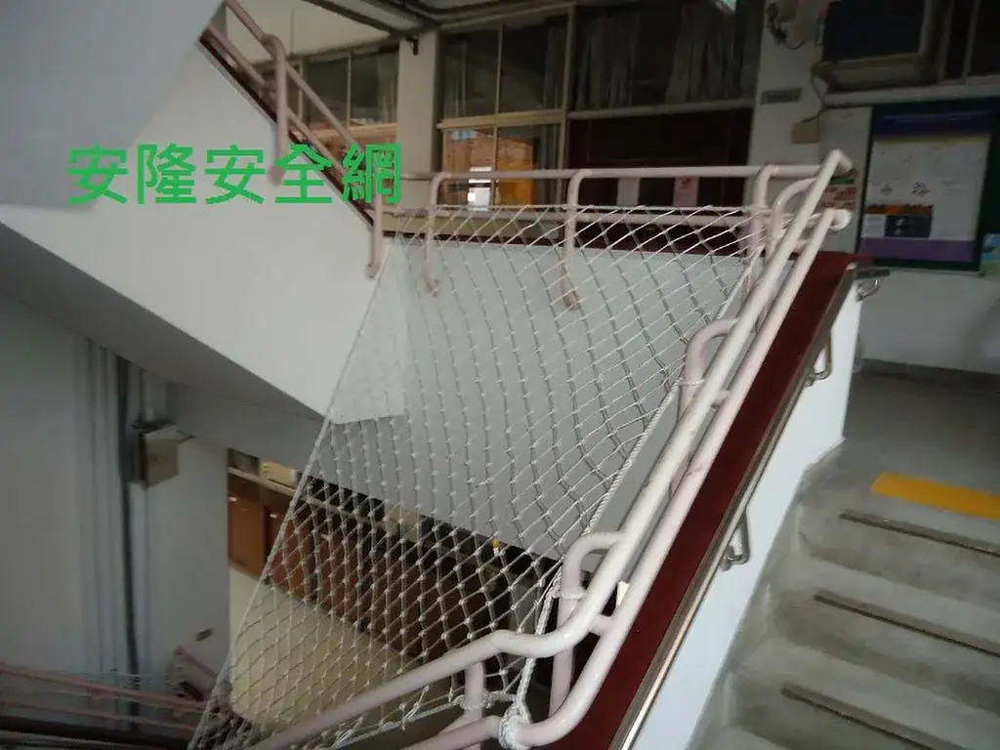
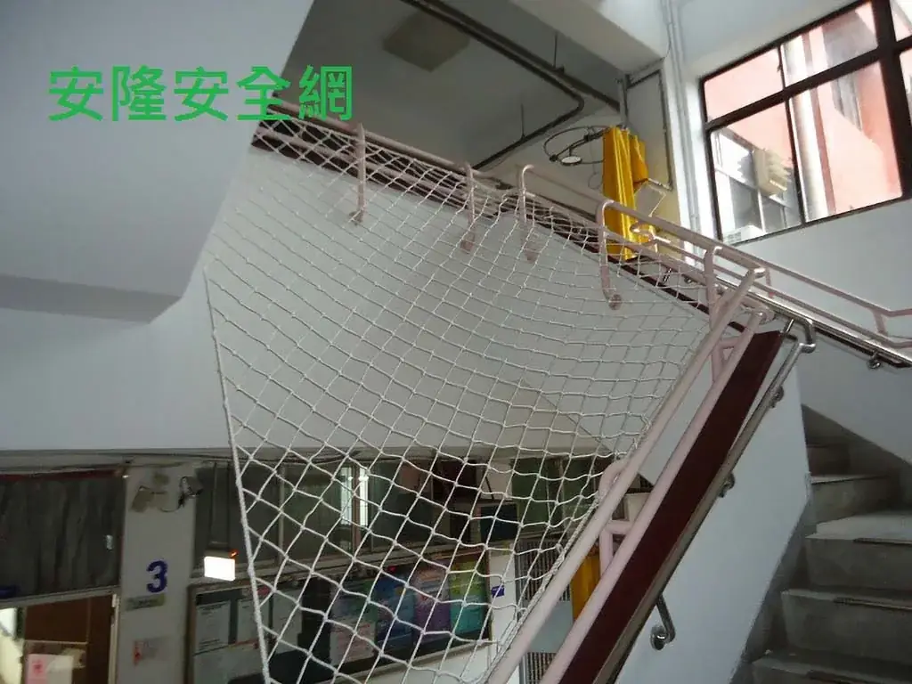

台北教育大學 樓梯天井安全網
校舍樓梯中央開口以多層水平防護網補強，降低人員與物件由樓梯天井墜落的風險。



施工目的與現場做法
本案防護位置為校舍樓梯中央挑空區。從現場紀錄可見，安全網依各樓層開口範圍水平張掛，將原本連續向下的樓梯天井分層攔截，兼顧樓梯正常通行與開口防護。
學校樓梯屬於高頻使用空間，評估時不能只看網子本身，還要檢查欄杆或結構固定位置、網面下方淨空、是否妨礙逃生動線，以及後續巡檢能否安全進行。
照片與資料說明
本頁僅記載既有工程照片可確認的場域與防護形式。原始工程年份、網材線徑、網目與驗收文件未在現有交接資料中留存，因此不臆測刊載；相同需求仍須依現場重新測量與選材。